Candidate List 20260812Last night — ZTF: 3,663 passed basic cuts (310 young) · LSST: 0 passed basic cuts (0 young)Previous Day Next Day
Section 1: New Sources (age<1d) Section 2: Old (1-5d) sources observed last nightplaceholder
Section 1: New Afterglow/FBOT Cands Last Night (1)
1. [ZTF] ZTF26abnnqnm (Afterglow?) [Back to Top] [Share] [Trigger Swift] [Fritz Alert] [Fritz Source] [Lasair]RA, Dec: 275.69851, 42.94853 18h22m47.64s, 42d56m54.72sGalactic (l, b): 70.80264, 23.07199 ext(g-r) = 0.044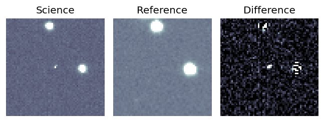
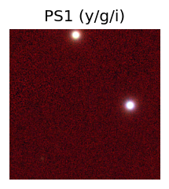
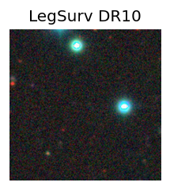
TESS: Sectors [ 14 26 40 52 53 54 74 79 80 81 118 119]
PS1: 0 sources in 3 arcsec
LegacySurvey: 1 sources in 3 arcsec Closest: d = 3.82 arcsec, 240.8 deg (east of north) photoz=0.91 (68% bounds 0.51, 1.22), type=PSF peak abs mag (ext. corrected) = -24.31 (68% bounds -22.8, -25.11)
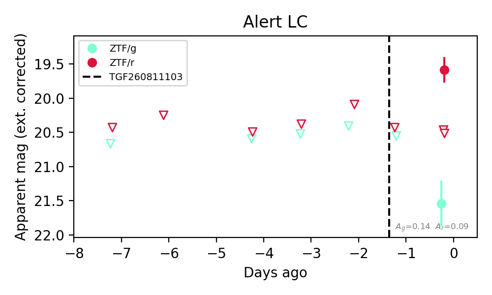
Extinction-corrected gr color:
From alerts: 1.96 +/- 0.39 mag
Consistent with synchrotron, g-r>0!
Rise Rate:
r: 39.67 mag/day
Fade Rate:
Section 2: Older Sources Observed Last Night (20)
0. [ZTF] ZTF26abmjmqk (FBOT?) [Back to Top] [Share] [Trigger Swift] [Fritz Alert] [Fritz Source] [Lasair]RA, Dec: 31.44858, -5.28866 2h 5m47.66s, -5d-17m-19.18sGalactic (l, b): 165.27453, -61.88398 ext(g-r) = 0.028


TESS: Sectors [ 4 97 108]
SDSS (<15 kpc):Found SDSS phot-z: z=0.05; peak abs mag = -20.37
PS1: 0 sources in 3 arcsec
LegacySurvey: 1 sources in 3 arcsec Closest: d = 6.22 arcsec, 323.5 deg (east of north) photoz=0.84 (68% bounds 0.78, 0.89), type=REX peak abs mag (ext. corrected) = -27.15 (68% bounds -26.96, -27.3)

Extinction-corrected gr color:
From alerts: 0.39 +/- 0.06 mag
Extinction-corrected gi color:
From alerts: 0.17 +/- 0.05 mag
Extinction-corrected ri color:
From alerts: -0.23 +/- 0.05 mag
Consistent with synchrotron, g-r>0!
Rise Rate:
g: 0.39 mag/day
r: 0.4 mag/day
i: 0.39 mag/day
Fade Rate:
1. [ZTF] ZTF26abmrebm (Afterglow?) [Back to Top] [Share] [Trigger Swift] [Fritz Alert] [Fritz Source] [Lasair]RA, Dec: 10.85691, 22.94891 0h43m25.66s, 22d56m56.07sGalactic (l, b): 120.52848, -39.88546 ext(g-r) = 0.037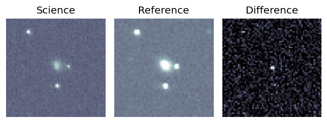
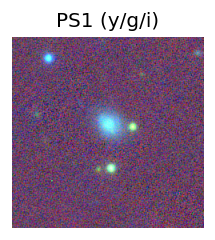
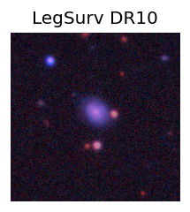
TESS: Sectors [17 57 84]
SDSS (<15 kpc):Found SDSS phot-z: z=0.07; peak abs mag = -18.35
PS1: 0 sources in 3 arcsec
LegacySurvey: 1 sources in 3 arcsec Closest: d = 1.92 arcsec, 353.0 deg (east of north) photoz=0.07 (68% bounds 0.06, 0.08), type=SER peak abs mag (ext. corrected) = -18.39 (68% bounds -17.94, -18.67)
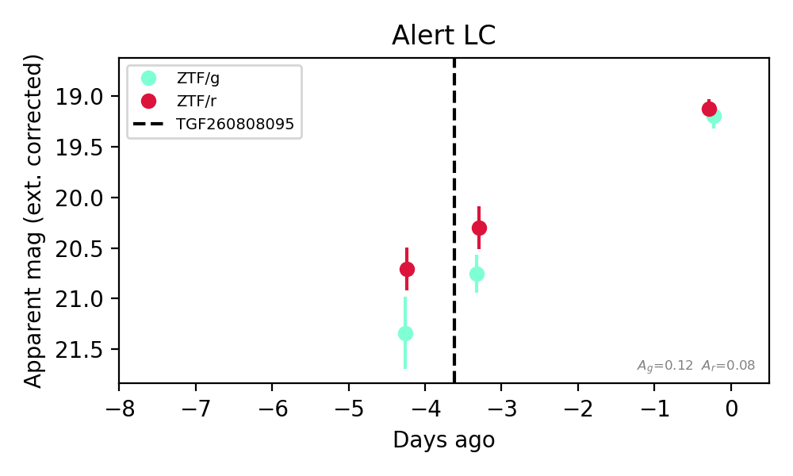
Extinction-corrected gr color:
From alerts: 0.08 +/- 0.15 mag
Consistent with synchrotron, g-r>0!
Rise Rate:
g: 0.51 mag/day
r: 0.4 mag/day
Fade Rate:
2. [ZTF] ZTF26abnibuo (Afterglow?) [Back to Top] [Share] [Trigger Swift] [Fritz Alert] [Fritz Source] [Lasair]RA, Dec: 269.70912, 41.95754 17h58m50.19s, 41d57m27.15sGalactic (l, b): 68.50314, 27.09279 ext(g-r) = 0.037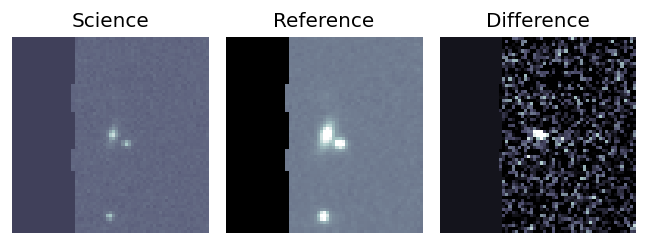
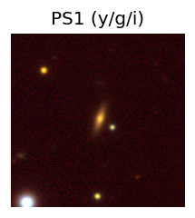
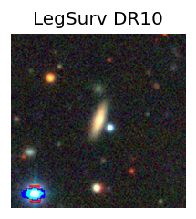
TESS: Sectors [ 25 26 40 52 53 54 74 79 80 117 118 119]
SDSS (<15 kpc):Found SDSS phot-z: z=0.12; peak abs mag = -19.48
NED photo-z only: WISEA J175850.15+415727.3 (G, 0.4″) z=0.0684 [zflag PUN] — not used for peak abs mag
PS1: 0 sources in 3 arcsec
LegacySurvey: 1 sources in 3 arcsec Closest: d = 0.34 arcsec, 291.0 deg (east of north) photoz=0.08 (68% bounds 0.06, 0.09), type=SER peak abs mag (ext. corrected) = -18.52 (68% bounds -17.98, -18.83)
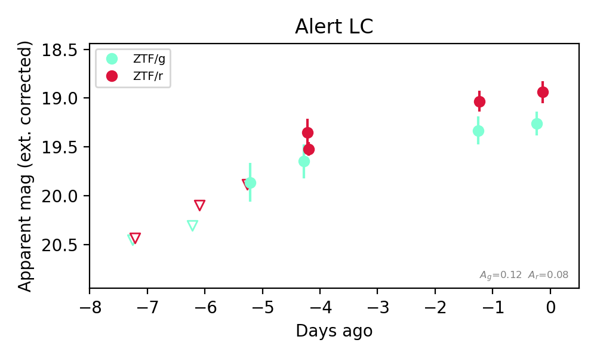
Extinction-corrected gr color:
From alerts: 0.29 +/- 0.22 mag
Consistent with synchrotron, g-r>0!
Rise Rate:
g: 0.44 mag/day
r: 0.51 mag/day
Fade Rate:
3. [ZTF] ZTF26abnktnq (FBOT?) [Back to Top] [Share] [Trigger Swift] [Fritz Alert] [Fritz Source] [Lasair]RA, Dec: 36.63539, 31.93764 2h26m32.49s, 31d56m15.49sGalactic (l, b): 145.458, -26.74061 ext(g-r) = 0.079


TESS: Sectors [18 58 85]
PS1: 0 sources in 3 arcsec
LegacySurvey: 1 sources in 3 arcsec Closest: d = 0.11 arcsec, 146.9 deg (east of north) photoz=1.15 (68% bounds 0.61, 1.4), type=REX peak abs mag (ext. corrected) = -27.94 (68% bounds -26.26, -28.47)

Extinction-corrected gr color:
From alerts: -0.18 +/- 0.07 mag
Rise Rate:
g: 1.11 mag/day
r: 3.53 mag/day
Fade Rate:
4. [ZTF] ZTF26abnmlme (FBOT?) [Back to Top] [Share] [Trigger Swift] [Fritz Alert] [Fritz Source] [Lasair]RA, Dec: 270.19694, 38.91714 18h 0m47.27s, 38d55m1.72sGalactic (l, b): 65.30806, 25.99165 ext(g-r) = 0.033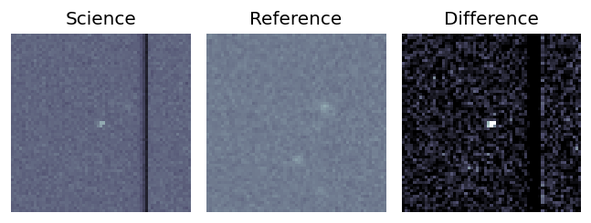
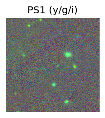
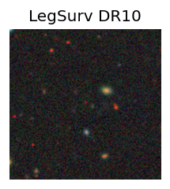
TESS: Sectors [ 25 40 52 53 74 79 80 118 119]
PS1: 0 sources in 3 arcsec
LegacySurvey: 1 sources in 3 arcsec Closest: d = 0.68 arcsec, 338.3 deg (east of north) photoz=0.9 (68% bounds 0.78, 1.06), type=PSF peak abs mag (ext. corrected) = -23.98 (68% bounds -23.61, -24.42)
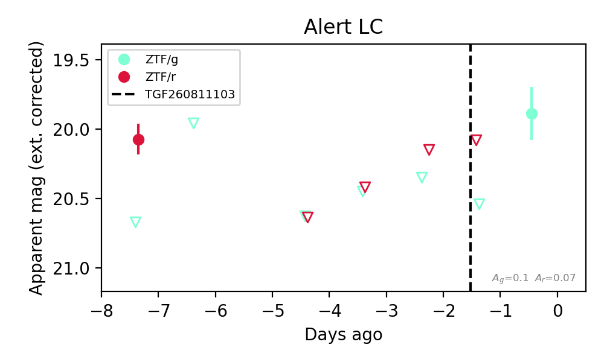
Extinction-corrected gr color:
From alerts: 0.6 +/- 99 mag
Rise Rate:
g: 0.7 mag/day
r: 0.52 mag/day
Fade Rate:
r: 0.19 mag/day
5. [ZTF] ZTF26abnmubk (FBOT?) [Back to Top] [Share] [Trigger Swift] [Fritz Alert] [Fritz Source] [Lasair]RA, Dec: 285.93946, 32.5565 19h 3m45.47s, 32d33m23.40sGalactic (l, b): 63.62432, 11.83385 ext(g-r) = 0.121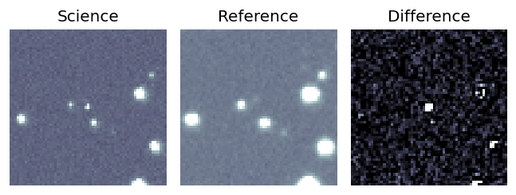
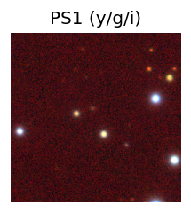

TESS: Sectors [14 40 41 53 54 74 80 81]
PS1: 1 source in 3 arcsec Closest: d = 3.03 arcsec photoz=0.18+/-0.05 peak abs mag = -21.26
LegacySurvey: 0 sources in 3 arcsec
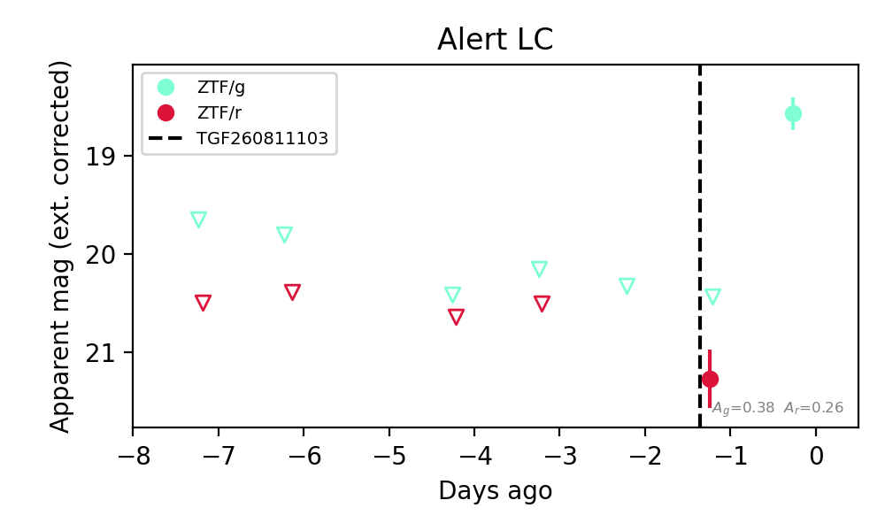
Extinction-corrected gr color:
From alerts: -0.83 +/- 99 mag
Rise Rate:
g: 1.96 mag/day
Fade Rate:
6. [ZTF] ZTF26abnmwti (Afterglow?) [Back to Top] [Share] [Trigger Swift] [Fritz Alert] [Fritz Source] [Lasair]RA, Dec: 282.92966, 32.16943 18h51m43.12s, 32d10m9.94sGalactic (l, b): 62.19608, 13.99601 ext(g-r) = 0.15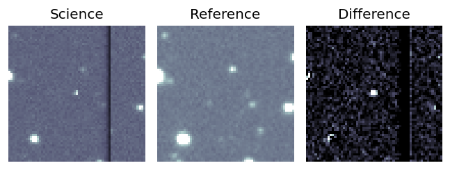
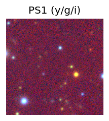

TESS: Sectors [ 14 26 40 53 54 74 80 81 118 119]
PS1: 1 source in 3 arcsec Closest: d = 8.78 arcsec photoz=1.06+/-0.59 peak abs mag = -25.78
LegacySurvey: 0 sources in 3 arcsec
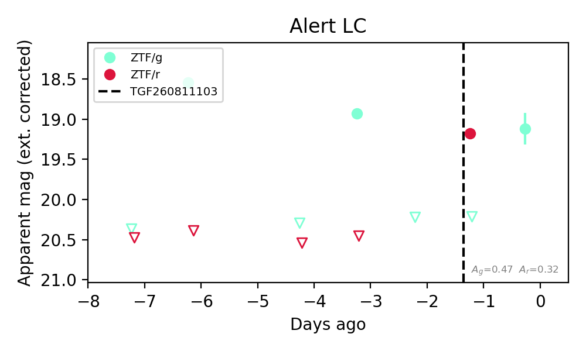
Extinction-corrected gr color:
From alerts: 1.03 +/- 99 mag
Rise Rate:
g: 1.81 mag/day
r: 0.65 mag/day
Fade Rate:
g: 1.26 mag/day
7. [ZTF] ZTF26abnmwwg (FBOT?) [Back to Top] [Share] [Trigger Swift] [Fritz Alert] [Fritz Source] [Lasair]RA, Dec: 270.75134, 14.91583 18h 3m0.32s, 14d54m56.99sGalactic (l, b): 41.16226, 17.32321 ext(g-r) = 0.169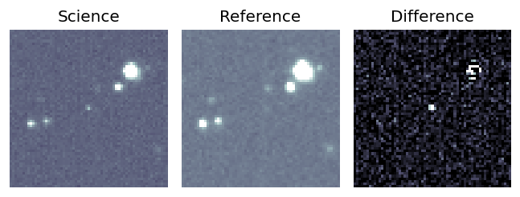
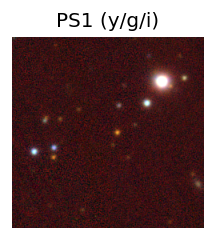
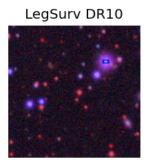
TESS: Sectors [ 53 80 118]
PS1: 0 sources in 3 arcsec
LegacySurvey: 1 sources in 3 arcsec Closest: d = 2.76 arcsec, 257.8 deg (east of north) photoz=0.19 (68% bounds 0.03, 1.61), type=PSF peak abs mag (ext. corrected) = -20.46 (68% bounds -15.8, -25.95)
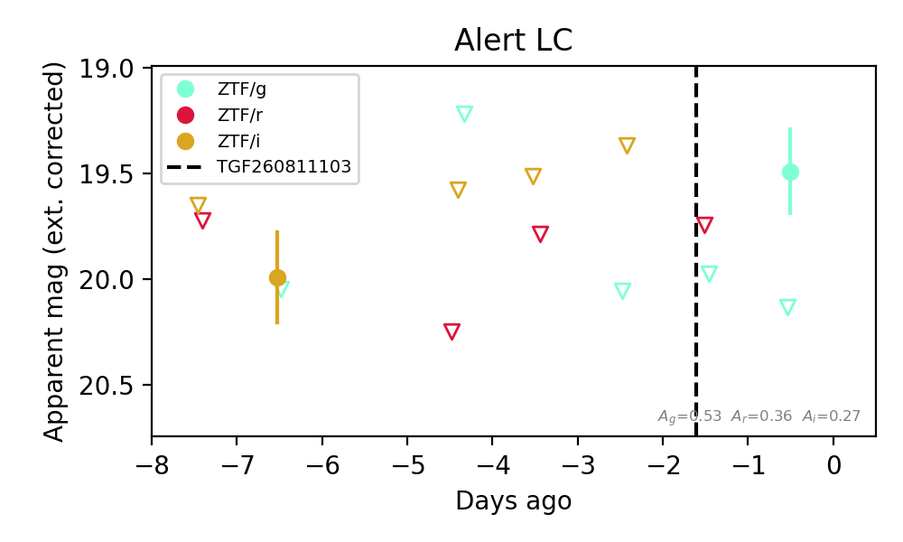
Extinction-corrected gi color:
From alerts: 0.06 +/- 99 mag
Rise Rate:
g: 18.9 mag/day
Fade Rate:
8. [ZTF] ZTF26abnnevh (FBOT?) [Back to Top] [Share] [Trigger Swift] [Fritz Alert] [Fritz Source] [Lasair]RA, Dec: 272.20268, 45.65025 18h 8m48.64s, 45d39m0.92sGalactic (l, b): 72.98224, 26.17512 ext(g-r) = 0.033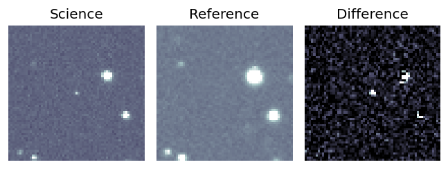
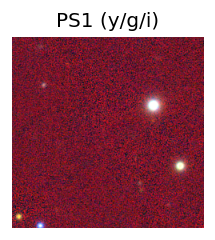
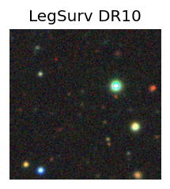
TESS: Sectors [ 14 25 26 40 52 54 74 79 80 81 117 118 119]
PS1: 0 sources in 3 arcsec
LegacySurvey: 1 sources in 3 arcsec Closest: d = 1.46 arcsec, 98.2 deg (east of north) photoz=0.67 (68% bounds 0.5, 0.89), type=REX peak abs mag (ext. corrected) = -23.04 (68% bounds -22.26, -23.8)
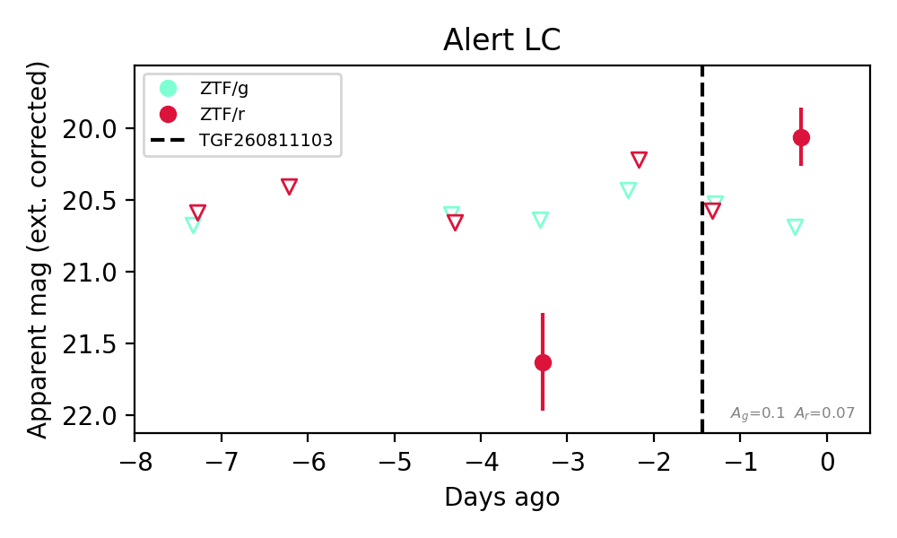
Extinction-corrected gr color:
From alerts: 0.63 +/- 99 mag
Rise Rate:
r: 0.53 mag/day
Fade Rate:
9. [ZTF] ZTF26abnnfgs (FBOT?) [Back to Top] [Share] [Trigger Swift] [Fritz Alert] [Fritz Source] [Lasair]RA, Dec: 290.21221, 17.4488 19h20m50.93s, 17d26m55.69sGalactic (l, b): 51.75601, 1.60856 ext(g-r) = 3.705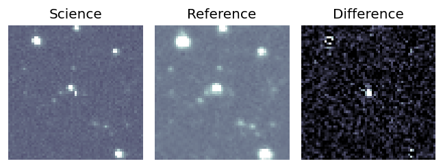
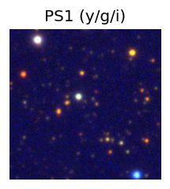

TESS: Sectors [ 14 40 54 81 119]
PS1: 1 source in 3 arcsec Closest: d = 3.37 arcsec photoz=0.63+/-0.08 peak abs mag = -31.26
LegacySurvey: 0 sources in 3 arcsec
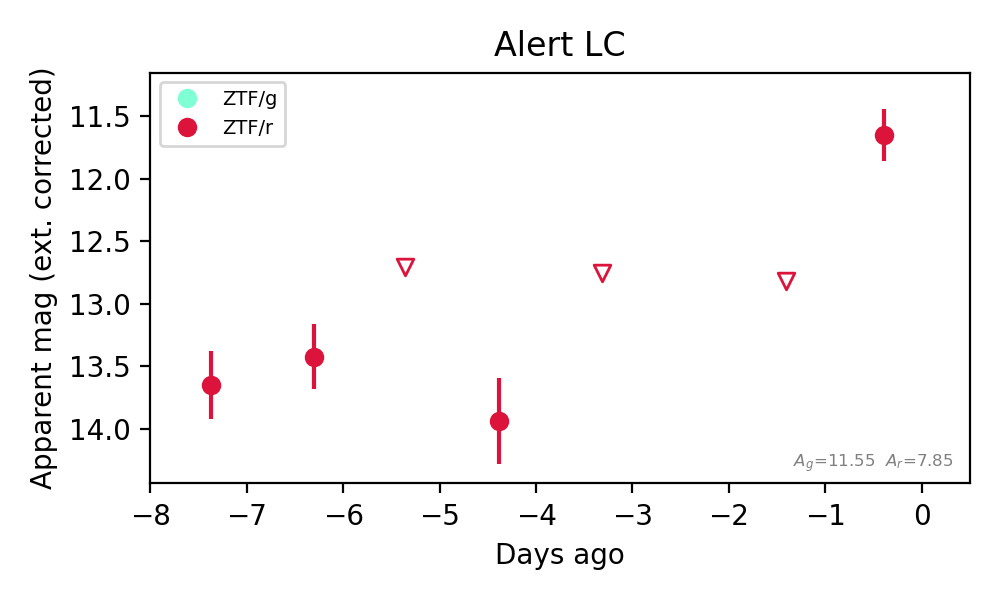
Extinction-corrected gr color:
From alerts: -4.66 +/- 99 mag
Rise Rate:
r: 1.15 mag/day
Fade Rate:
10. [ZTF] ZTF26abnnjns (FBOT?) [Back to Top] [Share] [Trigger Swift] [Fritz Alert] [Fritz Source] [Lasair]RA, Dec: 289.29415, 47.38912 19h17m10.60s, 47d23m20.82sGalactic (l, b): 78.64052, 15.54906 ext(g-r) = 0.094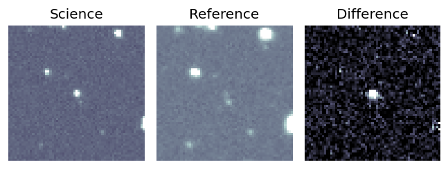
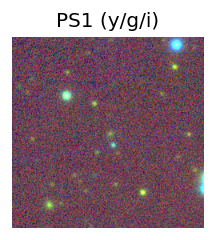

TESS: Sectors [ 14 15 40 41 53 54 55 74 75 80 81 82 119 120]
PS1: 1 source in 3 arcsec Closest: d = 1.27 arcsec photoz=0.54+/-0.06 peak abs mag = -24.59
LegacySurvey: 0 sources in 3 arcsec
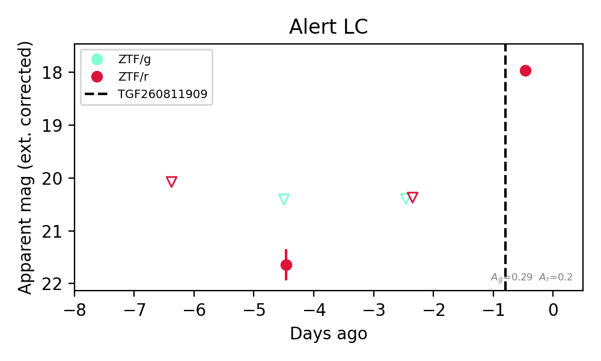
Extinction-corrected gr color:
From alerts: -1.23 +/- 99 mag
Rise Rate:
r: 1.27 mag/day
Fade Rate:
11. [ZTF] ZTF26abnnltz (Afterglow?) [Back to Top] [Share] [Trigger Swift] [Fritz Alert] [Fritz Source] [Lasair]RA, Dec: 290.76853, 39.24425 19h23m4.45s, 39d14m39.31sGalactic (l, b): 71.49834, 11.16444 ext(g-r) = 0.151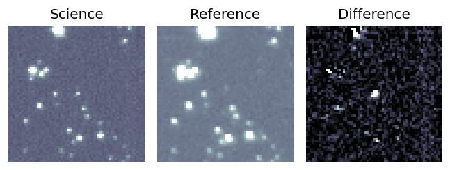
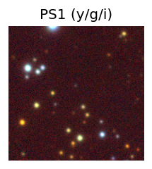

TESS: Sectors [ 14 40 41 54 55 75 82 119 120]
PS1: 1 source in 3 arcsec Closest: d = 2.81 arcsec photoz=0.60+/-0.34 peak abs mag = -23.73
LegacySurvey: 0 sources in 3 arcsec
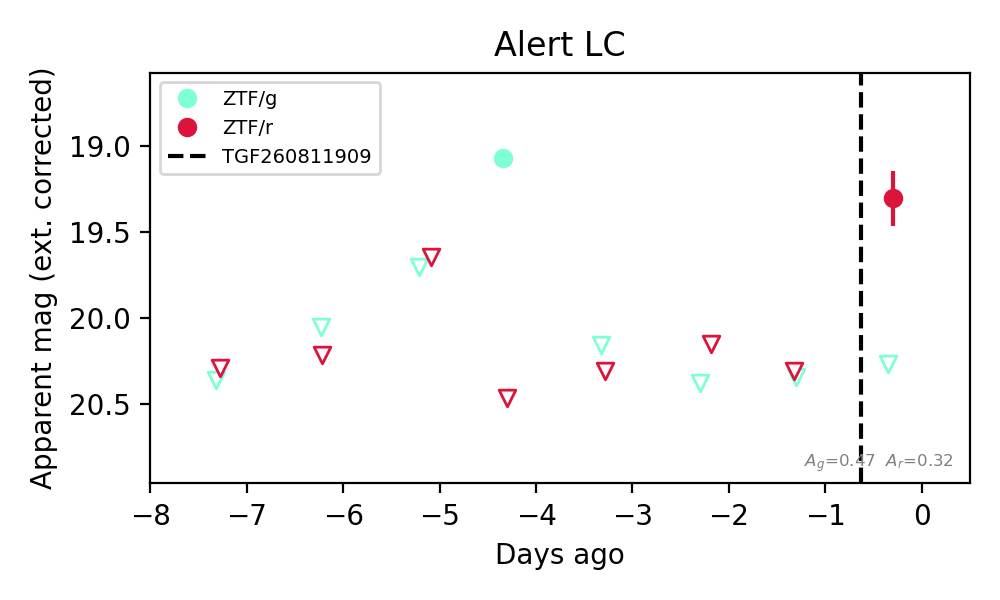
Extinction-corrected gr color:
From alerts: 0.96 +/- 99 mag
Rise Rate:
g: 0.72 mag/day
r: 0.98 mag/day
Fade Rate:
g: 1.07 mag/day
12. [ZTF] ZTF26abnnpuw (Afterglow?) [Back to Top] [Share] [Trigger Swift] [Fritz Alert] [Fritz Source] [Lasair]RA, Dec: 291.11865, -18.62835 19h24m28.48s, -18d-37m-42.08sGalactic (l, b): 19.60102, -15.47418 WARNING: 3.36 deg from ecliptic plane ext(g-r) = 0.098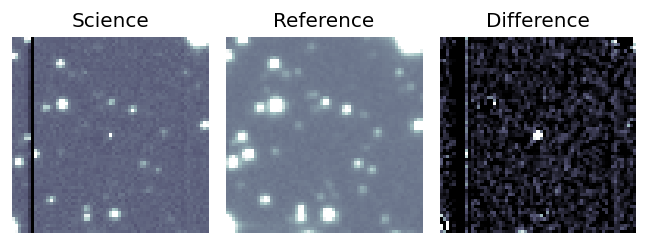
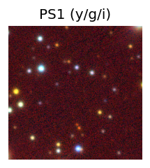
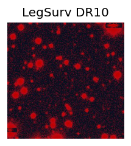
TESS: Sectors [ 92 116]
PS1: 0 sources in 3 arcsec
LegacySurvey: 0 sources in 3 arcsec
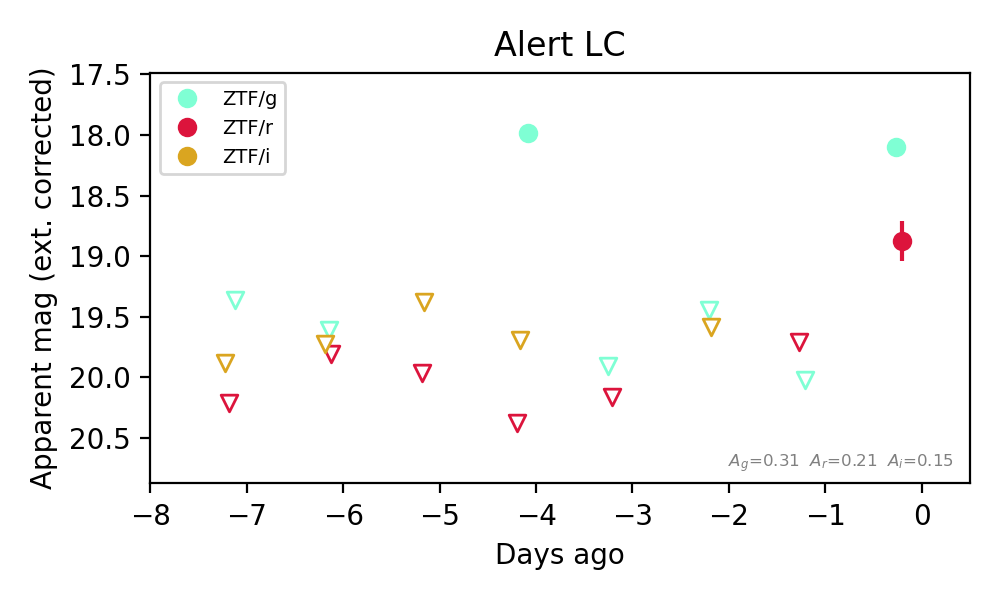
Extinction-corrected gr color:
From alerts: -0.78 +/- 0.17 mag
Extinction-corrected gi color:
From alerts: -1.7 +/- 99 mag
Rise Rate:
g: 2.06 mag/day
r: 0.78 mag/day
Fade Rate:
g: 2.29 mag/day
13. [ZTF] ZTF26abnodsm (FBOT?) [Back to Top] [Share] [Trigger Swift] [Fritz Alert] [Fritz Source] [Lasair]RA, Dec: 326.51703, 24.64567 21h46m4.09s, 24d38m44.40sGalactic (l, b): 77.91746, -21.60978 ext(g-r) = 0.075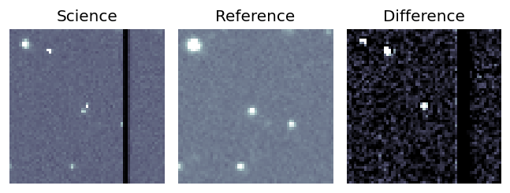
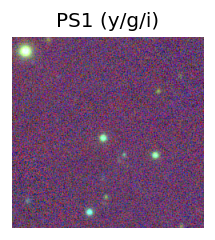
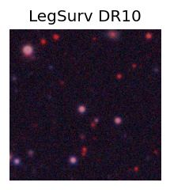
TESS: Sectors [55 56 82]
PS1: 0 sources in 3 arcsec
LegacySurvey: 1 sources in 3 arcsec Closest: d = 2.63 arcsec, 142.9 deg (east of north) photoz=0.38 (68% bounds 0.06, 0.9), type=PSF peak abs mag (ext. corrected) = -22.52 (68% bounds -17.95, -24.79)
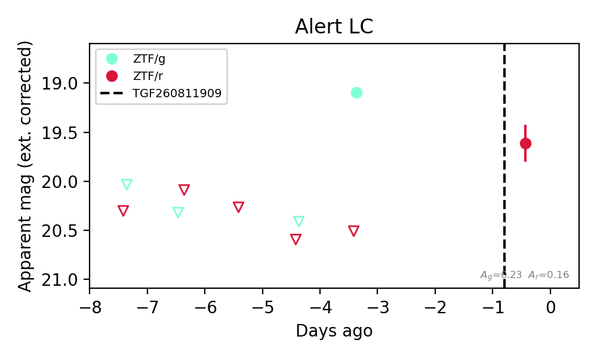
Extinction-corrected gr color:
From alerts: -1.41 +/- 99 mag
Rise Rate:
g: 1.32 mag/day
r: 0.3 mag/day
Fade Rate:
14. [ZTF] ZTF26abnogim (FBOT?) [Back to Top] [Share] [Trigger Swift] [Fritz Alert] [Fritz Source] [Lasair]RA, Dec: 313.40602, 26.33506 20h53m37.45s, 26d20m6.23sGalactic (l, b): 70.90836, -11.71817 ext(g-r) = 0.191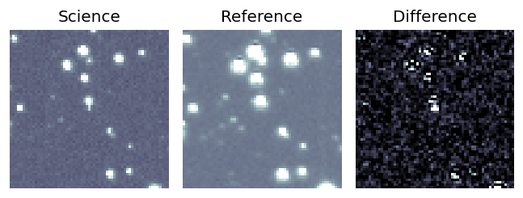
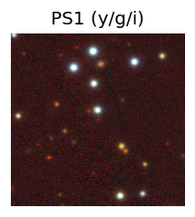

TESS: Sectors [ 15 41 82 120]
PS1: 1 source in 3 arcsec Closest: d = 3.05 arcsec photoz=0.33+/-0.70 peak abs mag = -21.77
LegacySurvey: 0 sources in 3 arcsec
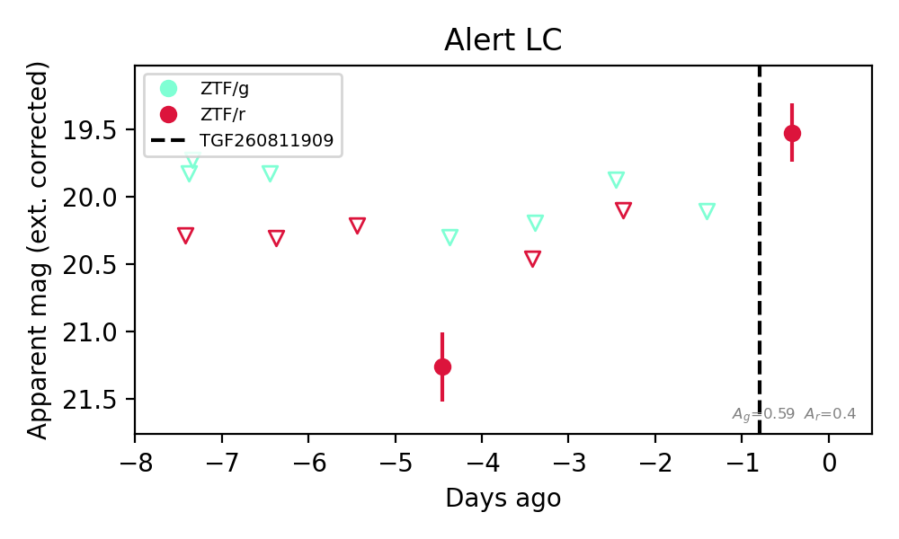
Extinction-corrected gr color:
From alerts: -0.96 +/- 99 mag
Rise Rate:
r: 0.43 mag/day
Fade Rate:
15. [ZTF] ZTF26abnohfe (FBOT?) [Back to Top] [Share] [Trigger Swift] [Fritz Alert] [Fritz Source] [Lasair]RA, Dec: 310.06074, 21.68542 20h40m14.58s, 21d41m7.49sGalactic (l, b): 65.23587, -12.09574 ext(g-r) = 0.08
TESS: Sectors [ 14 41 55 81 82 120]
PS1: 1 source in 3 arcsec Closest: d = 1.47 arcsec photoz=0.17+/-0.17 peak abs mag = -20.16
LegacySurvey: 0 sources in 3 arcsec
Extinction-corrected gr color:
From alerts: -0.88 +/- 99 mag
Rise Rate:
r: 0.78 mag/day
Fade Rate:
16. [ZTF] ZTF26abnpcdx (FBOT?) [Back to Top] [Share] [Trigger Swift] [Fritz Alert] [Fritz Source] [Lasair]RA, Dec: 321.6824, 25.06383 21h26m43.77s, 25d 3m49.77sGalactic (l, b): 74.95571, -18.19438 ext(g-r) = 0.133
TESS: Sectors [ 15 55 82 121]
SDSS (<15 kpc):Found SDSS phot-z: z=0.13; peak abs mag = -19.13
PS1: 1 source in 3 arcsec Closest: d = 0.22 arcsec photoz=0.16+/-0.03 peak abs mag = -19.65
LegacySurvey: 0 sources in 3 arcsec
Extinction-corrected gr color:
From alerts: -0.56 +/- 0.23 mag
Rise Rate:
g: 0.55 mag/day
Fade Rate:
17. [ZTF] ZTF26abnpmhw (FBOT?) [Back to Top] [Share] [Trigger Swift] [Fritz Alert] [Fritz Source] [Lasair]RA, Dec: 295.30007, 1.05553 19h41m12.02s, 1d 3m19.90sGalactic (l, b): 39.62696, -10.56176 ext(g-r) = 0.389
TESS: Sectors [54 81]
PS1: 1 source in 3 arcsec Closest: d = 0.81 arcsec photoz=0.16+/-0.09 peak abs mag = -20.95
LegacySurvey: 0 sources in 3 arcsec
Extinction-corrected gi color:
From alerts: 0.73 +/- 99 mag
Extinction-corrected ri color:
From alerts: 1.28 +/- 99 mag
Rise Rate:
i: 0.76 mag/day
Fade Rate:
18. [ZTF] ZTF26abnqfmy (FBOT?) [Back to Top] [Share] [Trigger Swift] [Fritz Alert] [Fritz Source] [Lasair]RA, Dec: 340.74455, -2.90029 22h42m58.69s, -2d-54m-1.03sGalactic (l, b): 65.61879, -50.88774 WARNING: 4.85 deg from ecliptic plane ext(g-r) = 0.056
TESS: Sectors [42 70 92]
SDSS (<15 kpc):Found SDSS phot-z: z=0.25; peak abs mag = -21.43
PS1: 0 sources in 3 arcsec
LegacySurvey: 1 sources in 3 arcsec Closest: d = 3.27 arcsec, 123.4 deg (east of north) photoz=0.4 (68% bounds 0.3, 0.61), type=REX peak abs mag (ext. corrected) = -22.61 (68% bounds -21.91, -23.73)
Extinction-corrected gi color:
From alerts: 1.27 +/- 99 mag
Extinction-corrected ri color:
From alerts: -0.61 +/- 99 mag
Rise Rate:
i: 0.37 mag/day
Fade Rate:
19. [ZTF] ZTF26abnqpvq (Afterglow?) [Back to Top] [Share] [Trigger Swift] [Fritz Alert] [Fritz Source] [Lasair]RA, Dec: 343.04179, 35.46613 22h52m10.03s, 35d27m58.06sGalactic (l, b): 97.15486, -21.366 ext(g-r) = 0.118
TESS: Sectors [56 83]
PS1: 1 source in 3 arcsec Closest: d = 8.50 arcsec photoz=0.45+/-0.08 peak abs mag = -22.32
LegacySurvey: 0 sources in 3 arcsec
Extinction-corrected gr color:
From alerts: 0.03 +/- 0.45 mag
Consistent with synchrotron, g-r>0!
Rise Rate:
r: 0.61 mag/day
Fade Rate: